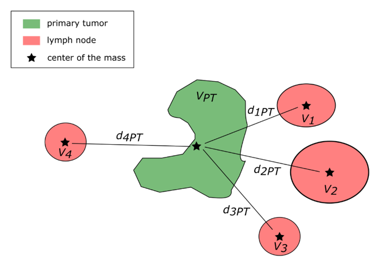

Z-Rad is an in-house developed radiomics software implemented at the Department of Radiation Oncology of University Hospital Zurich.
Software
The software consists of two main modules: a post-processing module to prepare the image data for radiomics calculation and a radiomics calculation module for the effective calculation of radiomic features.
Input data
Z-Rad offers radiomic feature extraction from different medical image modalities, such as: computed tomography, positron emission tomography, magnetic resonance tomography and perfusion computed tomography. It is fully DICOM compatible, handling the medical imaging scans as well as structure set with predefined region of interest (ROI).
Post-processing module
Prior to the calculation of radiomic features from the ROI, Z-Rad allows to resample images and ROI to a predefined spatial resolution using trilinear interpolation (IBSI p. 5) [1]. The resampled images and structure sets are saved in DICOM format.
ROI mask extraction
The contour points are translated to the voxel coordinates of the analyzed image. Next, those voxels are used to find a contour polygon and points inside this polygon using the pointPolygonTest function from Python cv2 library (version 2.4.6). Next, the image-specific coordinates of voxels inside this polygon are extracted.
Image discretization
Two image discretization methods are implemented according to the recommendation of IBSI (p. 12):
Fixed bin size: e.g. 10 HU
Fixed number of bins: the grey level value range is divided into e.g. 64 bins.
Radiomics calculation module
For the radiomic feature calculation, please refer to the feature definition section. For CT imaging, Hounsfield units (HU) can be manually restricted to a particular HU range, i.e. to exclude bone or air structures from the region of interest. For the PET module, conversion to the standardized uptake value is optional. For the MR module, intensities can be normalized using a linear relationship between two normal tissue ROIs (e.g. muscle and fat).
Code
Z-Rad is implemented in Python programming language 3.7. It requires following python packages:
Numpy >= v1.14.0
Scipy >= v1.0.0
Matplotlib >= v2.0.0
Pydicom >= v1.3.0
WxPython >= v4.0.6
VTK >= v8.1.2
OpenCV >= v4.1.2
PyWavelets >= v1.1.1
Standard features definition
Z-Rad calculates radiomic features, which can be categorized into four main types: shape, histogram based, texture based and filtered-based (wavelet) features. Features were defined according to the image biomarker standardisation initiative (IBSI, version 9)[1]. The deviations from the IBSI recommendation and additional features are described below:
Shape
median thickness - median of distances of each voxel in the region of interest to its surface, calculated using distance transform,
SD thickness - standard deviation of distances of each voxel in the region of interest to its surface,
maximum 3D diameter - the largest pairwise Euclidian distance between voxels of the region of interest,
fractal dimension - calculated using box contouring technique and fixed grid scans excluding the voxels with 'not a number' value [2]
\begin{equation*}
fractal\ dimension = \frac{\ln(N(r))}{\ln(r)} - I,
\end{equation*}
where r - size of the contouring box, N(r) - number of boxes of size r containing at least one voxel, which belongs the studied structure, I - intercept.
Texture matrices
The Gray Level Co-occurrence Matrix (IBSI p. 57)
The parameters from the Gray Level Co-occurrence Matrix[3] are calculated in all 26 directions with a distance of one voxel. The final parameters are the average of all directions or are calculated on matrix merged over all directions. Let \(P_{ij}\) denote the \((i,j)\) entry in the Gray Level Co-occurrence Matrix, \(N_g\) - number of gray tones in a studied structure, \(P_{xi}=\sum_{j=1}^{N_g} P_{ij}\), \(P_{yj}=\sum_{i=1}^{N_g}P_{ij}\), \(P_{x+y}(k)=\sum_{j=1}^{N_g} \sum_{i=1}^{N_g} P_{ij}\), where \(k=i+j\), \(P_{x-y} (k) = \sum_{j=1}^{N_g} \sum_{i=1}^{N_g} P_{ij}\), where \(kv=|i-j|\), then
\begin{equation*}
maximal\ correlation\ coefficient= \sqrt{second\ largest\ eigenvalue\ of \sum_{k=1}^{N_g} \frac{P_{ik} P_{jk}}{P_{xi} P_{ji}}}.
\end{equation*}
If one of the voxels had a 'not a number' value, the pair was not taken into account in the calculations.
The Gray Level Distance Zone Matrix (IBSI p. 80)
Missing internal voxels: in the IBSI implementation '…the distance map of the GLDZM is affected by the definition of what constitutes the ROI surface. The particular surface used here should match the one used for calculating morphological features. This includes the same treatment of internal missing volumes.' However, in the Z-Rad implementation the same mask is used as for the calculation of texture features, including e.g. exclusion of voxels with high intensities removed with HU thresholding.
Wavelet
The filter-based features are not standardized within the IBSI (as of November 2019). In the Z-Rad, the wavelet transform is performed in 3D using Coiflet ('coif1') function from python package PyWavelets. The decimated wavelet transform (with a downsample factor of 2) is used. The contours are consecutively resampled to the lower resolution grid. The sum of energy in the wavelet maps is normalized to the energy of the original image.
Distribution features definition
The distribution features aim to quantify the spread of regional metastatic disease (metastatic lymph nodes LN) around the primary tumor (PT). This information is based purely on location and volumes of the nodes; no image intensity is taken into account. Here we present the summary of the distribution features and their definitions. The points within the primary tumor and lymph nodes are defined based on the clinical contours and a 1mm cubic grid. The clinical lymph node contour are additionally split into subcontours for single nodes (Figure 1). The distances between structures are defined as the distances between respective centers of the mass. The following features are then calculated.
Features based on the location of center of the mass
1. Center of mass shift between primary tumor contour and contour encompassing primary tumor and lymph nodes
\begin{equation}
center\ of\ mass\ shift = \sqrt{(CM_{PT}- CM_{PT+LN})^2 },
\end{equation}
where CM is center of mass.
2. Distribution of distances between primary tumor and lymph nodes
\begin{equation}
largest\ distance = \max(d_{iPT}),
\end{equation}
\begin{equation}
mean\ distance = \frac{1}{n} \sum_{i=1}^n d_{iPT},
\end{equation}
\begin{equation}
sum\ of\ distances = \sum_{i=1}^n d_{iPT},
\end{equation}
where \(d_{iPT}\) – distance between the \(i\)th lymph node and primary tumor, \(n\) – number of nodes, \(d_{ij}\) – distance between the \(i\)th and \(j\)th lymph node and primary tumor.
Sum of distances between primary tumor and lymph nodes distances normalized by the average distance between lymph nodes
\begin{equation}
normalized\ sum\ of\ distances = \frac{\sum_{i=n}^n d_{iPT}}{\frac{1}{n} \sum_{i=1}^n \sum_{j=i+1}^n d_{ij}}.
\end{equation}
4. Distribution of distances between primary tumor and lymph nodes weighted by lymph node's volume
\begin{equation}
largest\ weighted\ distance = \max (d_{iPT} v_i),
\end{equation}
\begin{equation}
mean\ weighted\ distance = \frac{1}{n} \sum_{i=1}^n d_{iPT} v_i,
\end{equation}
where \(v_i\) – volume of the \(i\)th lymph node.
5. Distribution of distances between primary tumor and lymph nodes weighted by lymph node's volume and normalized by tumor volume
\begin{equation}
normalized\ largest\ weighted\ distance = \max(\frac{d_{iPT} v_i)}{v_{PT}},
\end{equation}
\begin{equation}
normalized\ mean\ weighted\ distance = \frac{1}{n} \sum_{i=1}^n \frac{d_{iPT} v_i}{v_{PT}},
\end{equation}
where \(v_{PT}\) is the volume of primary tumor.
6. Distribution of the smallest (minimal) distances among the analyzed structures based on Kruskal algorithm [4] (see Figure 2)
\begin{equation}
distance\ distribution\ mean = \frac{1}{n+1} \sum_{k=1}^{n+1} mind_k,
\end{equation}
\begin{equation}
distance\ distribution\ variance = \frac{1}{n+1} \sum_{k=1}^{n+1} (mind_k- \mu_{mind})^2,
\end{equation}
where \(mind_i\) – distribution of minimal distances, \(\mu_{mind}\) – mean of the distribution of minimal distances.
Features based on all the points within contours
7. Optimal number of clusters in kmeans clustering based on Calinski-Harabasz index and points within lymph nodes contour [5].
8. Principal component analysis based on all the points within primary tumor and lymph nodes [1].
\begin{equation}
elongation = \sqrt{\frac{minor\ principal\ axis}{major\ principal\ axis}}
\end{equation}
\begin{equation}
flatness = \sqrt{\frac{least\ principal\ axis}{major\ principal\ axis}}
\end{equation}

Figure 1. Scheme of the lymph nodes distribution around primary tumor; \(v_i\) – volume of \(i\)th lymph node, \(v_{PT}\) – volume of primary tumor, \(d_{iPT}\) – distance between center of the mass of primary tumor and \(i\)th lymph node.Figure 2. Scheme of the lymph nodes distribution around primary tumor additionally showing the shortest path between the structures.
References
Zwanenburg, A., et al. Image biomarker standardisation initiative. arXiv e-prints, 2016.
Fractal Dimension Estimation Methods for Biomedical Images, in MATLAB - A Fundamental Tool for Scientific Computing and Engineering Applications - Volume 3. 2012, InTech.
Textural features for image classiification. IEEE Trans Syst Man Cybern, 1973. 3: p. 610-621.
Cormen, T.H., et al., Introduction to algorithms. 2009: MIT press.
Caliński, T. and J. Harabasz, A dendrite method for cluster analysis. Communications in Statistics-theory and Methods, 1974. 3(1): p. 1-27.